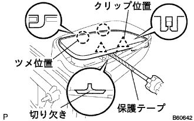
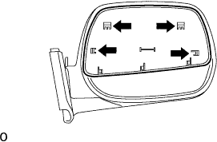
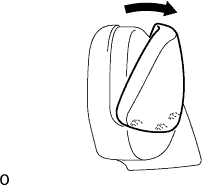

Otari Vie Miller ASSY RH degradation |
| 1. Outer Ryabi Umiller RH is removed |
|  |
Use a flathead driver with a protective tape to insert it into the notch and remove the clip.
Pull out the Otariya View Miller to remove the claws, and remove the Otari View Miller.
| 2. Outmiller Cover RH is removed |
|  |
Remove the claws in the figure in the figure from the inside of the mirror Bodly.
|  |
As shown in the figure, defeat the upper part of the mirror cover forward, remove the lower claws, and remove the outer mirror cover RH.